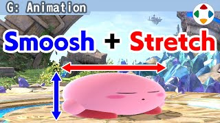
速览
把模型放大缩小叫缩放（Scaling），在动作中是非常基本的东西。计算机图形中的多边形及其运动，原则上由缩放、旋转、平移三要素构成。移动和旋转天天都在用，缩放却不然——但它不能被轻视，有的东西会因此好很多。比如做一个球弹跳的动作，用 GIF 动画随便做成这样：这也不算不行，但并用缩放就成了这样的表现——质感完全不同，甚至感觉有手感了。这种压扁的缩放叫挤压与拉伸（Squash & Stretch），能有效增加质感和势头。表现这类运动时，请大致以保持质量为前提：竖着压扁，横向就伸长。卡比的下蹲和着地从 Game Boy 时代就会变形，用模型表现后也是如此；但单纯压扁会缺乏量感，只成了一个椭圆。所以当时的规格中写着：不是单纯缩放，而是要像点阵图那样的、偏椭圆的量感——单纯竖压的话圆形很乏味。也讨论过用混合形状（在两个模型间插值）让边缘带点量感，结果如何不记得了，但至少看起来不只是单纯缩放。相当细节的地方也包含这样的缩放动作。马力欧出拳时拳头变大，更像是夸张表现，和这个稍有不同。动作调味发愁时，试着引入缩放吧。
1. 什么是缩放 0:03
把模型放大缩小叫缩放，在动作中是非常基本的东西。
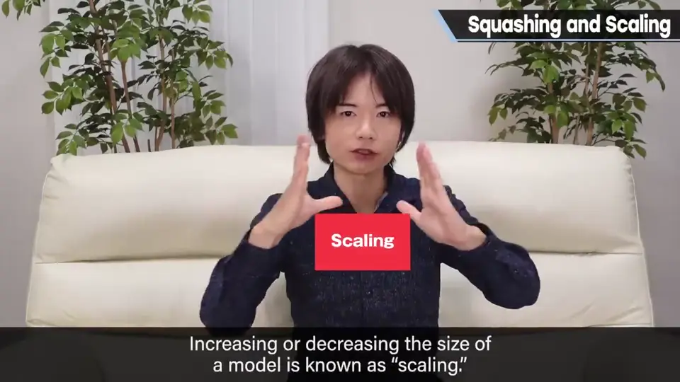
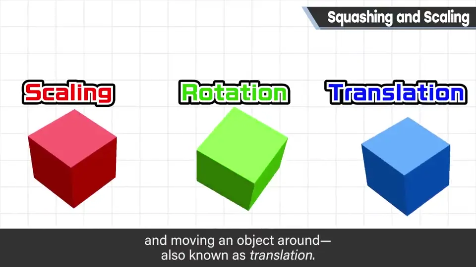
计算机图形中的多边形及其运动，原则上由缩放、旋转、平移三要素构成。
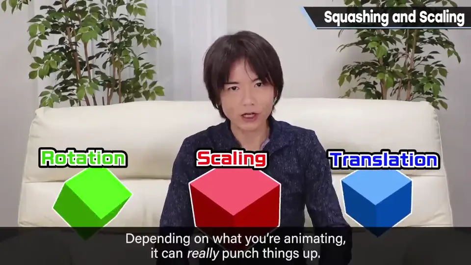
2. 弹球示例 0:46
做一个球弹跳的动作，用 GIF 动画随便做成这样：这也不算不行。
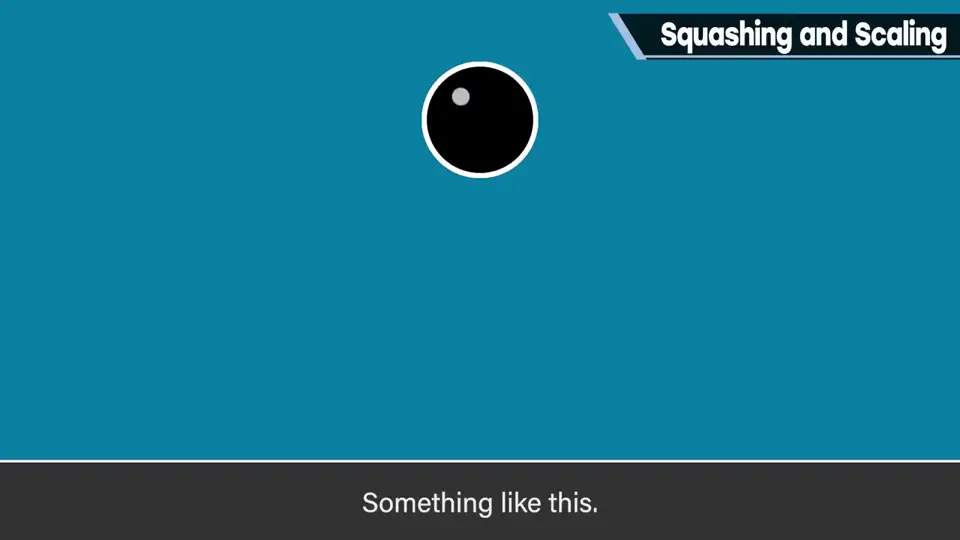
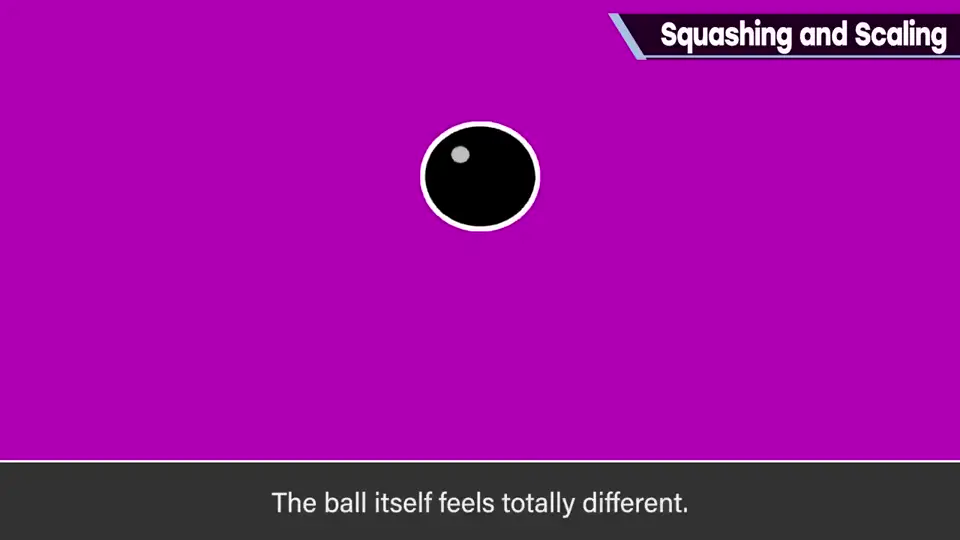
但并用缩放，就成了这样的表现。质感完全不同，甚至感觉得到手感。
3. 挤压与拉伸 1:07
这种压扁的缩放叫挤压与拉伸，能有效增加质感和势头。
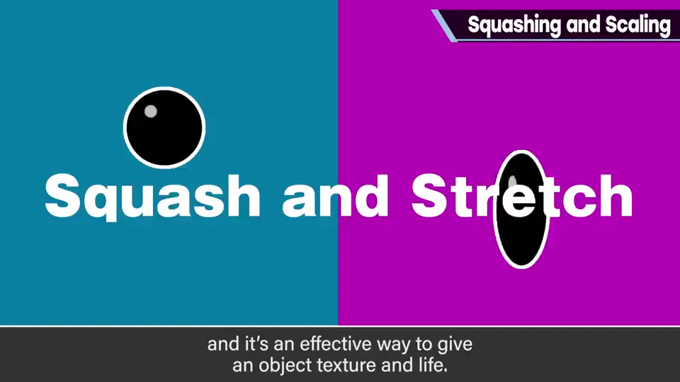
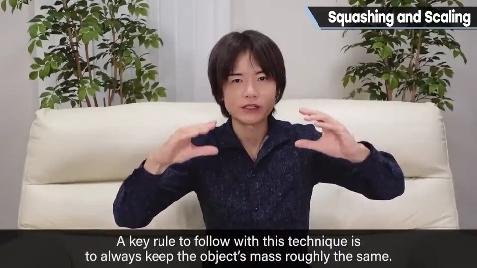
4. 卡比的量感 1:30
卡比的下蹲和着地从 Game Boy 时代就会变形，用模型表现后也是如此。
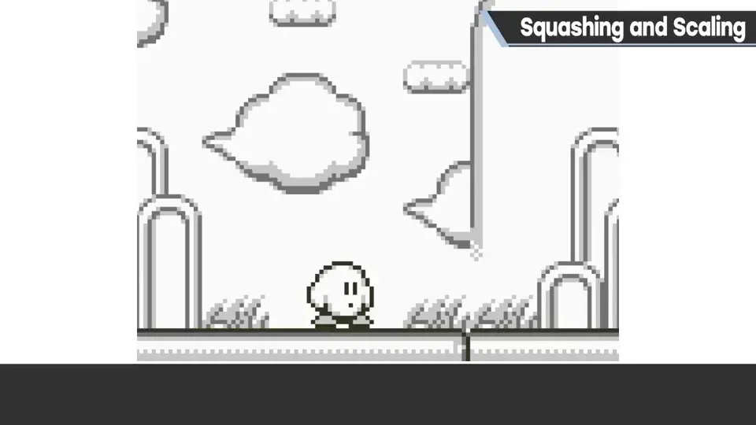
但单纯压扁会缺乏量感，只成了一个椭圆。所以当时的规格中写着：不是单纯缩放，而是要像点阵图那样、带量感的形状。
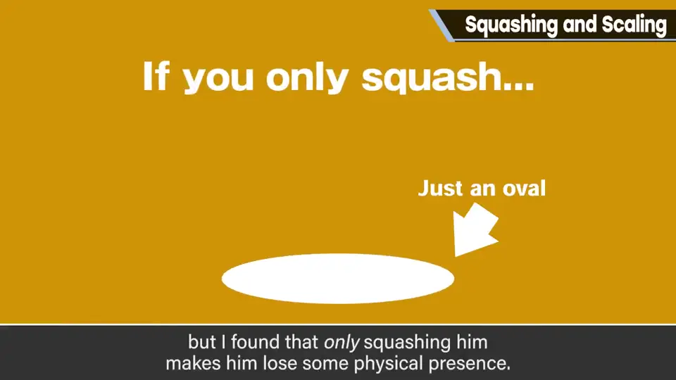
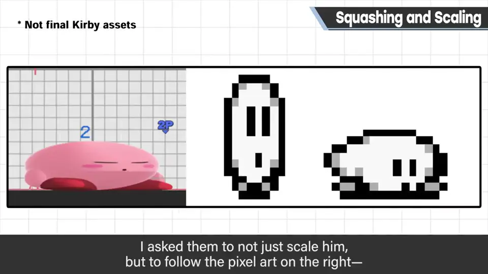
也讨论过用混合形状（在两个顶点数相同的模型间插值）让边缘带点量感，结果如何不记得了；但至少看起来不只是单纯缩放。
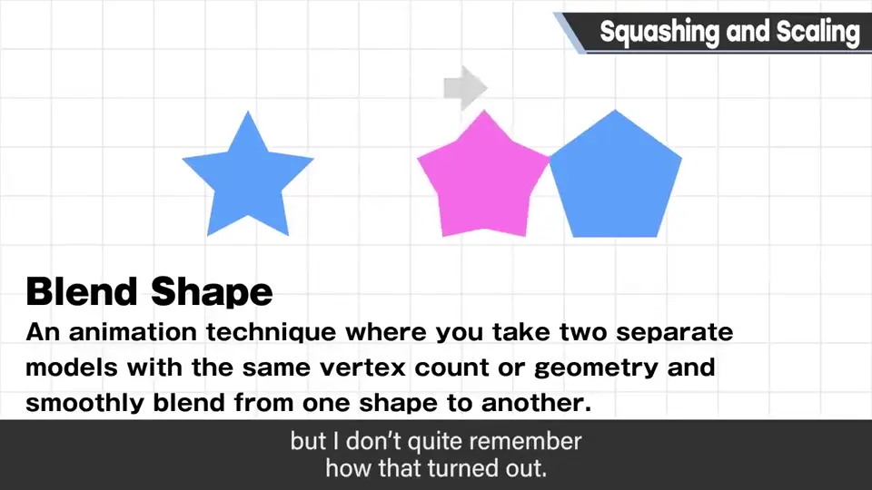
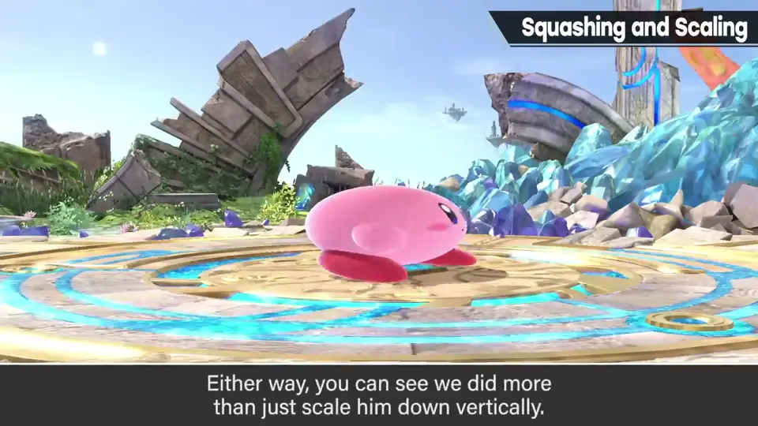
5. 夸张与调味 2:25
相当细节的地方也包含这样的缩放动作。马力欧出拳时拳头变大，更像是夸张表现，和这里说的稍有不同。
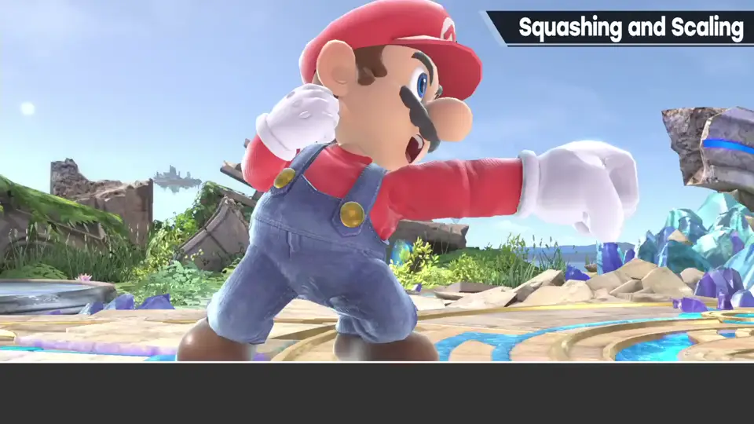
自测题
1. CG 运动的三要素是什么？
缩放、旋转、平移。 0:25
2. 挤压与拉伸的前提是什么？
保持质量：竖压则横伸。 1:22
3. 为什么卡比不能单纯压扁？
会缺乏量感，只是个椭圆；要按点阵图那样的量感来做。 1:45